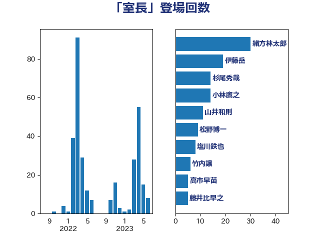

単語「室長」

| 緒方林太郎 | 無所属 | 30 回 |
| 伊藤岳 | 日本共産党 | 19 回 |
| 杉尾秀哉 | 立憲民主党 | 14 回 |
| 小林鷹之 | 自由民主党 | 14 回 |
| 山井和則 | 立憲民主党 | 11 回 |
| 松野博一 | 自由民主党 | 9 回 |
| 塩川鉄也 | 日本共産党 | 8 回 |
| 竹内譲 | 公明党 | 6 回 |
| 高市早苗 | 自由民主党 | 5 回 |
| 藤井比早之 | 自由民主党 | 5 回 |
| 熊谷裕人 | 立憲民主党 | 5 回 |
| 仁比聡平 | 日本共産党 | 5 回 |
| 上月良祐 | 自由民主党 | 5 回 |
| 野田国義 | 立憲民主党 | 4 回 |
| 石田真敏 | 自由民主党 | 4 回 |
| 渡辺周 | 立憲民主党 | 4 回 |
| 城井崇 | 立憲民主党 | 4 回 |
| 階猛 | 立憲民主党 | 3 回 |
| 足立康史 | 日本維新の会 | 3 回 |
| 笠井亮 | 日本共産党 | 3 回 |
| 橋本岳 | 自由民主党 | 3 回 |
| 斉藤鉄夫 | 公明党 | 3 回 |
| 高橋千鶴子 | 日本共産党 | 2 回 |
| 落合貴之 | 立憲民主党 | 2 回 |
| 穀田恵二 | 日本共産党 | 2 回 |
| 福山哲郎 | 立憲民主党 | 2 回 |
| 石垣のりこ | 立憲民主党 | 2 回 |
| 田村貴昭 | 日本共産党 | 2 回 |
| 浮島智子 | 公明党 | 2 回 |
| 河野太郎 | 自由民主党 | 2 回 |
| 江田憲司 | 立憲民主党 | 2 回 |
| 森山浩行 | 立憲民主党 | 2 回 |
| 根本匠 | 自由民主党 | 2 回 |
| 柴田巧 | 日本維新の会 | 2 回 |
| 本庄知史 | 立憲民主党 | 2 回 |
| 早稲田ゆき | 立憲民主党 | 2 回 |
| 小倉將信 | 自由民主党 | 2 回 |
| 大西英男 | 自由民主党 | 2 回 |
| 大西健介 | 立憲民主党 | 2 回 |
| 塚田一郎 | 自由民主党 | 2 回 |
| 吉川沙織 | 立憲民主党 | 2 回 |
| 佐藤正久 | 自由民主党 | 2 回 |
| 上野賢一郎 | 自由民主党 | 2 回 |
| 黄川田仁志 | 自由民主党 | 1 回 |
| 鶴保庸介 | 自由民主党 | 1 回 |
| 高橋克法 | 自由民主党 | 1 回 |
| 青木一彦 | 自由民主党 | 1 回 |
| 長妻昭 | 立憲民主党 | 1 回 |
| 鈴木貴子 | 自由民主党 | 1 回 |
| 野田聖子 | 自由民主党 | 1 回 |
| 赤羽一嘉 | 公明党 | 1 回 |
| 西村明宏 | 自由民主党 | 1 回 |
| 西村康稔 | 自由民主党 | 1 回 |
| 萩生田光一 | 自由民主党 | 1 回 |
| 芳賀道也 | 国民民主党 | 1 回 |
| 舟山康江 | 国民民主党 | 1 回 |
| 義家弘介 | 自由民主党 | 1 回 |
| 紙智子 | 日本共産党 | 1 回 |
| 篠原豪 | 立憲民主党 | 1 回 |
| 福田昭夫 | 立憲民主党 | 1 回 |
| 田名部匡代 | 立憲民主党 | 1 回 |
| 漆間譲司 | 日本維新の会 | 1 回 |
| 湯原俊二 | 立憲民主党 | 1 回 |
| 柳ヶ瀬裕文 | 日本維新の会 | 1 回 |
| 林芳正 | 自由民主党 | 1 回 |
| 松川るい | 自由民主党 | 1 回 |
| 末松信介 | 自由民主党 | 1 回 |
| 新垣邦男 | 立憲民主党 | 1 回 |
| 平木大作 | 公明党 | 1 回 |
| 岸真紀子 | 立憲民主党 | 1 回 |
| 岡田直樹 | 自由民主党 | 1 回 |
| 小池晃 | 日本共産党 | 1 回 |
| 小寺裕雄 | 自由民主党 | 1 回 |
| 宮本岳志 | 日本共産党 | 1 回 |
| 宮内秀樹 | 自由民主党 | 1 回 |
| 大串博志 | 立憲民主党 | 1 回 |
| 堤かなめ | 立憲民主党 | 1 回 |
| 古賀友一郎 | 自由民主党 | 1 回 |
| 佐藤英道 | 公明党 | 1 回 |
| 伊藤渉 | 公明党 | 1 回 |
| 伊藤忠彦 | 自由民主党 | 1 回 |
| 井上哲士 | 日本共産党 | 1 回 |
| 中根一幸 | 自由民主党 | 1 回 |
| 中村裕之 | 自由民主党 | 1 回 |
| 下条みつ | 立憲民主党 | 1 回 |
| 三原じゅん子 | 自由民主党 | 1 回 |
| 三上えり | 立憲民主党 | 1 回 |